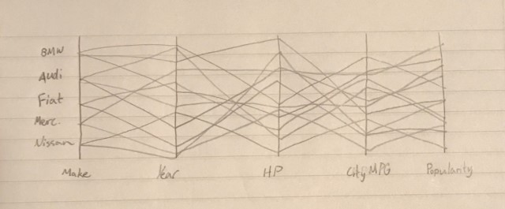
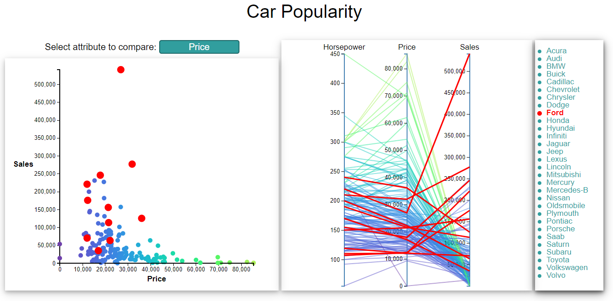
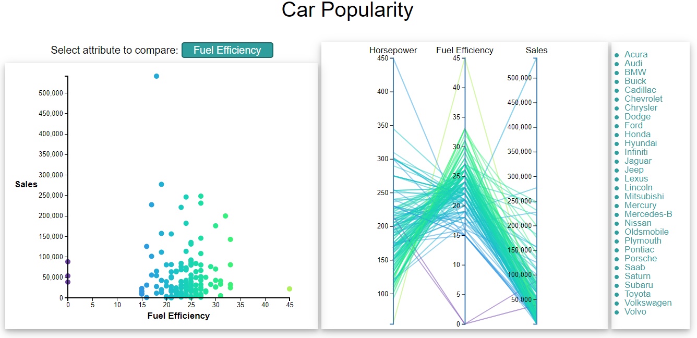
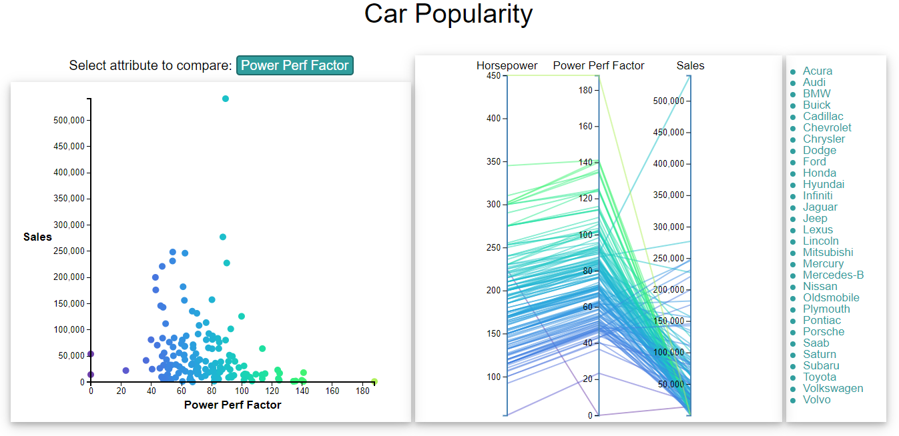

The original goal of our team was to find a dataset that aligned with our interests. We quickly found a common interest in cars and began looking for datasets that were robust in the number of records and attributes. In our first iteration of the design phase we honed in on a dataset that can be found on Kaggle. The original dataset had almost 12,000 records consisting of 16 different attributes.
Using the first dataset we came up with visualization ideas that would allow us to find the correlations between price and popularity, specific attributes of a car and its popularity, and how the popularity of a car changed over time. A scatter plot was one of the main types of visualizations we hoped to use as it is simple to derive correlations between two and sometimes 3 different variables. We planned on implementing a timeline visualization like one posed on the New York Times that visualized how different markets were affected by the 2008 recession. Along with a scatterplot and timeline we wanted to create a parallel chart as this would allow us to see the correlation between three or more variables at once.
Moving from theory to a practice proved to be a difficult task. During the data cleaning process, we realized we had misinterpreted the time data. We also discovered a fatal flaw with the popularity ratings. Time data was not recorded over time, and each vehicles popularity rating did not actually relate to the vehicle but the manufacturer. Due to these issues, we made the decision to look for a “cleaner” dataset.
We were able to identify a second dataset that worked better for what we were attempting to accomplish. Unfortunately, the dataset is significantly smaller, only 158 records with 17 attributes, but it was much easier to clean and load into D3. We could not find a dataset that had time data which would allow us to look at trends over time, but with our dataset we were still able to look at how different features affected popularity.
During our second iteration of the design process we removed the timeline graph and focused solely on trying to perfect the scatterplot and parallel chart. To do so we encoded total sales, which can be used as a measure of a vehicle’s popularity, as the vertical location on the Y-axis of our scatter plot. The vehicle’s price was encoded as the horizontal location on the X-axis of the scatter plot. This allowed viewers to digest how the price of a vehicle relates to how popular the vehicle was. We homed in on making a parallel chart that consisted of 3 attributes: horsepower, fuel efficiency, and total sales. This allowed viewer to see the correlation between the three variables and hopefully reach some interesting conclusions. We then encoded each vehicles manufacturer with color to try to allow the viewer do differentiate between vehicle manufacturers when looking at both visualizations.
During our third iteration of the design phase we added a legend for the manufacturers. This provided two functions for the viewer. One, easy identification of the manufacturer based on color. Two, the ability to select a manufacturer and have all data points of that manufacturer highlighted on the scatterplot and parallel chart. Ultimately this allowed for the viewer to draw conclusions based on a manufacturer instead of simply looking at a model of car. Unfortunately, due to the number of manufacturers and limited number of colors the human can easily perceive, the visualization became noisier than we would have liked it to be.
In the fourth iteration of the design phase we addressed the noisiness by removing colors for the manufacturer and adding a gradient color scheme. This color scheme encoded the variable on the x-axis of the price. This cleaned up the visualizations as well as making it easier to draw conclusions on the parallel charts.
In the final interaction of our design process we added a drop-down box to allow the user to select what they wanted to view in the scatter plot and parallel chart. The drop-down box is used to select the x-axis of the scatter plot and the middle line in the parallel chart. By adding the drop-down box, we were able to increase interactivity and broaden the information that can be gained from viewing the visualizations.
The goal of these visualizations was to determine how different attributes related to a vehicle's populaty. Specifically, out of the releveant attributes (Price, Fuel Efficiency, Horsepower, Engine Size, Power Perf Factor) what, if any, determines higher sales.
Based on the visualizations is seems vehicles priced between $10,000 and $40,000 are the most popular. More importantly, we can see the price has a negative correlation with sales. The cheaper a vehicle is, the more it will be sold.
Looking at the visualizations we can also see that the Ford F-Series trucks are an outlier. They have the highest sales totals by a long shot. When selecting all Ford vehicles, it seems they are the most popular manufacturer in our dataset. This is much easier to see when you can play around with the visulaization and highlight multiple manufacturers.
Exluding the F-Series trucks produced by Ford, it seems that the most popular vehicles in our dataset have a Fuel Efficiency Rating between 20 and 30mpg. This is not a surprise as almost all of the cars in the data set have a Fuel Efficiency between 15 and 35mpg. Looking at the scatterplot as a whole, it does not appear that Fuel Efficiency has any correlation with sales.
Using the parallel chart one can also see that increased horsepower does not related to increased sales. The vehicle with the highest horsepower has one of the lowest sales. Using the hover function, one can conclude that the most popular vehicles in terms of sales have between 125 and 225 horsepower.
When focusing on the Power Perf Factor, there seems to be a slight negative correlation with sales. The Power Perf Factor is a rating given to vehicles based on their total performance. Vehicles with higher a higher Power Perf Factor have bigger and more powerful engines, which relates to an higher price. Price has a negative correlation with sales. It is a surprise to find Power Perf Factor also has a slightly negative correlation.
We are happy with the final visulaization, but as with any project there are always improvements that could be made. We would like to find a more robust data set to see if the trends found here persist across a much larger population of vehicles. Finding a dataset with time data and location data would allow us to see trends over time and how different attributes relate to increased sales in different parts of the world. With the current visualizations, adding a function that allows you to compare a few manufacturers instead of all manufacturers would allow us to dig deep into what specific manufacturers are doing well compared to others.